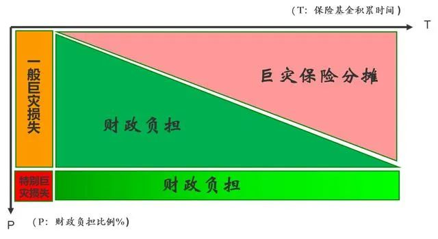

疫情防控数据系统暴露出哪些缺陷|战“疫”观察十五
原文链接 备份链接 总结这次疫情危机中暴露出来的经验和教训，如何使得数字技术与社会治理加以融合，进而推动组织变革，是值得多方研究的课题。 文 | 李星郡 编辑 | 朱弢 空格 此次新冠肺炎疫情，数字技术第一次全链条、全方位、全周期地介入疫 …

巨灾风险治理问题已成为社会治理，乃至国家安全、经济发展和人民生活的突出问题，如何建立新型巨灾风险治理制度，实现“藏救灾能力于市场，藏重建能力于民”的目标？

文 | 王和
3月12日，国家卫生健康委新闻发言人宣布，总体上中国本轮新型冠状病毒肺炎疫情的流行高峰已经过去。与此同时，中国境外的疫情状况却令人深忧，世界卫生组织总干事谭德塞在日内瓦举行的媒体通报会上宣布，新型冠状病毒肺炎进入全球大流行（pandemic）状态。
目前抗疫还没有取得最终胜利，这场席卷了全球的疫情必将对社会、经济造成巨大影响。也让人们开始思考，在现有的风险治理体系中，如何化解巨灾风险这一课题。
巨灾包括重大自然灾害、重大公共安全事故和重大公共卫生事件（有的国家将“恐怖主义活动”也纳入其中），往往给国家安全、社会稳定、经济发展和人民生活造成巨大影响，比如长江洪灾、汶川地震以及这次的新冠疫情。
由于巨灾具有难以预测和管控、突发性强、影响范围广、损失巨大等特征，难以用常规的社会风险管理手段治理，也无法通过市场手段和商业模式进行管理。这使得巨灾风险治理成为一项世界性难题，同时也是威胁着人类社会持续发展的重大挑战。
在人类社会的发展过程中，各国一直努力解决巨灾风险治理问题，但总体上成效有限，多是应急性应对，缺乏未雨绸缪的制度安排和能力储备。
中国的巨灾风险治理一直采用自上而下的纵向模式，以政府为主导，以财政为依托，以行政干预进行全国动员，从而高效、快速、大规模地调动起公共资源和社会力量。
客观来说，这种巨灾风险治理模式，符合中国发展初级阶段的国情，一次次演绎着巨灾风险治理的“中国故事”。
不过，传统巨灾风险治理的这种模式面临诸多挑战。经过这场新冠疫情洗礼之后，我们有必要系统地分析存在的问题和面临的挑战，探索如何在新的形势下建设具有中国特色的巨灾风险治理的新模式。
巨灾风险治理模式之困
巨灾风险暴露是一种客观存在，与人类社会相伴相生。随着社会进步和科技发达，巨灾风险暴露不仅没有降低，反而呈现聚集性、相关性和传染性增强的趋势，给经济和社会造成巨大影响。
以这场仍在持续发酵中的新冠疫情为例，为了抗疫，中国付出了让经济停摆两个月的巨大代价。随着新冠疫情向全球漫延，全球经济亦受到重创。近期全球股市重挫，3月13日一天之间十国股价遭遇熔断，便充分显示了这场巨灾风险的威力。
巨灾风险治理问题已成为社会治理，乃至影响国家安全、经济发展和人民生活的突出问题。
中国传统的巨灾风险治理模式，有一个重要特征是以财政资金作为巨灾风险治理的资金保障，具有主体单一、决策迅速、执行刚性等优势。
但随着中国社会和经济的发展，这种模将面临越来越严峻的“收支困境”。尤其是在财政刚性支出项目众多的情况下，地方财政已捉襟见肘，能够安排的巨灾风险治理预算和资金储备非常有限。而巨灾风险治理的资金需求，特别是重建资金保障，则面临“水涨船高”之势。
作为现代公共管理的一个重要评价指标是财政预算和执行的相对稳定，如果缺乏有效的巨灾风险治理机制，可能因救灾和重建因素，导致财政尤其是局部财政预算的不稳定甚至剧烈波动，让灾后区域经济和财政陷入恶性循环的局面。
另外，巨灾风险治理的绝大部分工作由政府财政承担，这种事权和财权的分配方式，既不符合现代社会治理和公共管理的基本原则，容易导致社会新的不公平，也面临资源短缺、效率不高、难以为继的问题。更重要的是，容易产生“搭便车”和“等、靠、要”的投机和依赖心理，导致巨灾风险治理的社会总效率不高。而区域间的转移支付，因为缺乏法理依据，可能导致新的不公平现象。
基于这种现状，中国巨灾风险治理体系需要与时俱进。这既有全面深化改革，实现治理体系和能力现代化的发展战略需要，更有确保公共管理资源，特别是财政预算稳定和经济可持续的现实需要。
认识巨灾风险治理的“公共性”
构建巨灾风险治理体系的关键要解决好定性和定位问题，定位的前提是深刻理解巨灾风险的特征。
巨灾风险通常具有四大特征：一是影响的普遍性，具有显著的公共属性；二是后果的巨灾性，造成的损失金额巨大，非个体和区域能够承受；三是发生的偶然性，巨灾发生往往无规律可循，难以进行预测和防范；四是处理的局限性，巨灾损失不适用大数法则，不能用商业保险等市场手段进行处理。
这意味着，巨灾风险治理属于公共管理领域，相关的服务属于公共和准公共产品的范畴，这是巨灾风险治理体系建设的理论基础和逻辑依据。
明确巨灾风险治理的公共属性，目的是防止将巨灾风险治理简单地交给市场的倾向。因为，无论是风险特征还是管理能力，无论是精算失灵还是市场失效，无论是设计思路，还是最终结果，市场和保险均难以“独当大任”。国外经验和中国的探索，均充分证明了这一点。
从中国的实践来看，一个最突出的问题就是缺乏对巨灾风险治理“公共性”的深刻认识，简单地把这一重任交给保险业。已经高度市场化的保险业往往“心有余而力不足”，最终陷入一种“讨价还价”的博弈，导致巨灾保险制度的“畸形”和“先天不足”。一旦发生巨灾，其能够发挥的作用相对有限，使得巨灾保险制度建设与发展陷入一种“鸡肋”局面。
巨灾风险治理先做“减法”
党的十九届四中全会提出：在解决关系国计民生的重大项目中，应发挥好“新型举国体制”的作用。因此，巨灾风险治理亦需思考如何构建新体制下的巨灾风险治理模式。
巨灾风险治理的进化逻辑在于创新，“新型”的关键是政府在巨灾风险治理中的作用和作为要“新”，不再让政府“大包大揽”，而是通过制度创新，全面整合和调动市场和社会资源，重构巨灾风险治理体制，重新配置全社会的巨灾风险治理责任。
概括来说，用“社会”解决治理资源的利用范围和可持续问题，用“市场”解决资源配置的公平和效率问题，最终实现更大程度地“藏救灾能力于市场，藏重建能力于民（社会）”的目标。
如果只是简单地采用市场机制建立的巨灾保险制度，往往容易陷入“治理逻辑”和“偿付能力”的双重困境。
因此，构建中国的新型巨灾风险治理模式，核心诉求是通过建立巨灾保险制度，尽可能地制度性剥离政府职责，转移行政成本。高度重视和充分发挥商业保险的作用，发挥风险管理的主观能动性，减少对社会和政府的依赖，降低社会风险暴露水平，提高社会风险管理的总效率。
剥离政府职责的逻辑是做“减法”，前提是要明确两个问题，一是巨灾风险的特征决定了任何一个市场制度，均不可能提供彻底的解决方案。因此，巨灾保险制度只能在一定程度上分担职责和剥离，政府乃至社会始终要扮演“兜底”的角色，逐渐实现从“全部责任”到“部分责任”，再到“兜底责任”的进步。
二是新型巨灾风险治理模式的重要目的是利用巨灾保险平台，改变“单一模式”，通过市场机制和激励手段，特别是税收优惠手段，强化企业和居民的风险主体意识，共同参与到巨灾风险的资金准备，实现多元化的责任主体和风险分摊的社会合作机制。
从技术的角度来看，能力问题的本质是偿付能力问题，即如何做到保得起、赔得起，如何确保巨灾保险制度不至于破产的问题。
偿付能力管理是各国在巨灾保险制度建设中难以回避的问题，也是一大难题。因为，巨灾风险的损失往往是巨大的，难以用传统精算、定价和准备金的方式进行管理。
在制度建设中往往容易陷入一种矛盾，一方面认识到巨灾保险制度建设的必要性，另一方面又觉得既然巨灾保险制度不可能彻底转移风险，便质疑制度建设的科学性。
巨灾保险制度尤其是在建设的初期，肯定不能解决巨灾风险治理，尤其是资金保障的全部问题。随着制度的不断完善和资金的不断积累，制度的能力将不断提升，与政府的巨灾风险治理能力形成一种“逐步接替”的效果。
在“减法”逻辑下，可以将巨灾风险损失进一步区分为“一般巨灾损失”和“特别巨灾损失”，明确巨灾保险制度的目标是循序渐进地接替财政的“一般巨灾损失”负担，而“特别巨灾损失”则需要作为政府和财政的“自留风险”。
这部分损失风险处理，一方面是巨灾保险制度面临“失灵”问题，解决不了可能使制度建设陷入“死循环”，另一方面可能面临转移成本过高，通过政府扮演“最终再保人”的角色，对于特殊巨灾风险损失采用“自留风险”的方式，则相对社会效率最优。
同时，从国外的先进经验来看，可以通过立法，建立“回调机制”，解决巨灾保险的“击穿风险”，确保政府“自留风险”的相对有限与可控。
因此，要坚持政府主导不主办，引导不经办，鼓励不包办，放手不撒手的原则，充分发挥制度优势，确保风险治理方案的稳步实施。

构建多层次巨灾保险机制
巨灾保险制度可以充分利用商业保险市场在筹集、管理和分配重建资金方面的制度优势。不过，在新型举国体制下，巨灾保险制度也要在新逻辑下，重构治理的组织体系。
重构的基本逻辑在于，要明确巨灾风险治理的公共属性和巨灾保险制度的有限性特征，可以通过社会合作机制，发挥保险市场的效率优势，建立一种社会化的基于长期积累的逐步分摊和承接机制，以降低政府和财政在灾后重建资金方面的压力。
建设新型巨灾保险制度，既要强化政府的主导作用，突出“放管有度”，引导和鼓励市场和社会参与管理，又不能简单地放手；既要充分发挥市场和社会的力量，又要确保结构科学和制度有效；既要强调效率，又要兼顾安全和公平；既要确保制度设计的科学合理，又要确保制度尽快落地，在实施的过程中不断完善。
就具体模式而言，可以采用“创新机制，分工合作，优势互补，纵横结合”，在事前风险防范和灾后恢复重建阶段，尽可能地引入社会和市场的力量，参与治理体系建设，尤其是通过巨灾保险，构建事后重建资金的共同积累机制。
首先，巨灾保险制度要建立一个统筹协调的机制平台，即全国巨灾保险基金及其理事会。这个平台既有资金账户的概念，更有统筹、指导和协调的职能。
在制度建设的初期，由于涉及大量基础性和协调性工作，特别是相关立法等，因此，平台应具有一定的行政色彩，确保权威性和统筹效率，待制度基本成熟，尤其是基金积累达到一定规模后，便可以逐步淡化行政色彩，过渡为具有PPP性质的“共保体”组织。
全国巨灾保险基金理事会可以依托中国保险保障基金公司，采用“两块牌子，一套人马”的模式，采用“统分结合”的模式，即按照自然灾害、公共安全和公共卫生分别建立巨灾保险基金，各司其职，各负其责。
同时，在自然灾害巨灾保险基金下，可以根据管理的需要设立子基金，如居民住宅地震巨灾保险基金和农业保险巨灾保险基金。巨灾保险基金在“全国基金”的框架下，实现各分类基金和各子基金之间的统筹与调剂，实现基金效用的最大化。
按照中国财政资源管理的逻辑、各地巨灾风险暴露的情况差异以及经济发展水平的不同，可以建立“两级管理”模式，即建立全国和各省两级基金，既兼顾各省的巨灾风险和财政能力差异，又确保巨灾风险基金分配的相对公平。
全国巨灾保险基金对省级巨灾保险基金可以通过“再保险”的方式进行支持，这种“再保险”既是保险技术的概念，也可以赋予其转移支付的功能。
在全国巨灾保险基金下，可以设立巨灾保险共保体，作为管理、协调和交互的平台，同时作为全国巨灾保险基金和省级巨灾保险基金的实施主体，将相关政策和巨灾基金转化为推动巨灾保险制度实施的市场资源，以确保制度的落地。
另一方面，巨灾保险共保体还扮演经营管理巨灾保险业务的行业自治组织，制定相关制度，开发产品，精算定价，费用政策，统一协调和管理保险市场和保险公司，以及再保险和资本市场。
在制度建设的初期，巨灾保险共保体可以作为全国巨灾保险基金理事会的一个内设机构，待制度成熟之后，逐步将其剥离成为相对独立的行业自治组织。
巨灾保险共保体也可以采用依托“中国城乡居民住宅地震巨灾保险共同体”和上海保险交易所的模式，在前期“居民住宅地震巨灾保险”实践的基础上，扩大范围，增加功能。
巨灾保险制度涉及大量公共利益的调整，需要加快推进《巨灾保险法》以及相关法律法规的制定和完善工作，确保巨灾保险制度的建设和运行，做到有法可依和有法必依。

如何化解偿付能力难题
偿付能力始终是巨灾保险制度建设的难题，那么，新型巨灾保险制度的实施路径，要将“偿付能力难题”作为突破的重点。
对于巨灾保险基金的来源，财政资金的投入可以“量力而行”，不必追求规模，可以充分利用“财政信用”资源，提供付款承诺、紧急融资、融资担保和贴息、发行特别国债等方式来解决资金问题，特别是初期和短期资金融通的问题。此外，也可以通过发行巨灾彩票的方式筹集资金。
巨灾保险基金作为统筹协调和管理国内外社会捐赠的平台，可以运用金融工程技术，分解巨灾风险，差异化匹配风险，创新解决工具。
通过巨灾证券化、巨灾债券和巨灾期权等方式，充分利用国内外资本市场分散风险。此外，投保巨灾保险作为银行融资的前提条件，也可以进一步提高巨灾保险的投保率和覆盖面，并体现制度的公共性。
化解偿付能力难题，还得益于风险防范水平的提升，并通过科技赋能，提高巨灾风险治理效率。近年来，感测技术、卫星遥感、生物识别、物联网、大数据、人工智能、区块链等科技在巨灾风险防控中得到极大的应用，比如本次新冠疫情中用手机定位系统开展确诊和疑似患者追踪。运用科技手段建立全面感测和动态反馈的巨灾风险管理技术平台，可以实现科学管理和动态预警，从而降低了巨灾风险可能导致的损失。
尽管科技能够为巨灾风险治理提供更科学和高效的技术和解决方案，但需要通过建立一种商业模式，形成良性循环机制，从而促进巨灾风险治理科技的规范和有序发展。
巨灾保险基金平台特别是巨灾保险共保体，为巨灾风险治理科技力量提供了一个合作“窗口”，一方面能够引导科技企业，聚焦巨灾风险治理的难点和焦点问题，形成切实可行的解决方案，另一方面通过“集中采购”和“推荐使用”的手段，确保新技术的落地并形成持续发展的动力。
巨灾风险治理是一项长期任务，要循序渐进地推进巨灾风险治理机制的建设。在这场席卷全球的新冠疫情之后，也许会有一些新的变化。
（作者为中国人民财产保险股份有限公司原副总裁、中国精算师协会副会长、国务院政府津贴专家；编辑：俞燕）

▲点击图片查看更多疫情报道
责编 | 蒋丽 lijiang@caijing.com.cn
本文为《财经》杂志原创文章，未经授权不得转载或建立镜像。如需转载，请在文末留言申请并获取授权。
原文链接 备份链接 总结这次疫情危机中暴露出来的经验和教训，如何使得数字技术与社会治理加以融合，进而推动组织变革，是值得多方研究的课题。 文 | 李星郡 编辑 | 朱弢 空格 此次新冠肺炎疫情，数字技术第一次全链条、全方位、全周期地介入疫 …
原文链接 备份链接 ©送给自己21岁的第二个生日礼物，关于20岁的反思（顺带狂批营销号和一部分华人及留学生） 20岁最让我后悔的，莫过于选择尝试了过度社交。 这其实是我曾经的一个盲区。我自幼至20岁都不懂社会社交真实的境况到底如何。 在读 …
原文链接 备份链接 由于一个城市治理决策的失误，造成了全国以及全社会的巨大损失，问题到底出在哪里？今后如何避免类似失误？ 文 | 李铁 从1月23日武汉“封城”开始，全国城乡都一级响应，举国动员全面防疫。虽然到目前为止，除重点疫区外，其他 …
原文链接 备份链接 人是一种社会生物，这就是为什么我们需要缔结社会契约，而新冠病毒可能就是那个触发点 图/视觉中国 文 | 沈联涛 香港乃至许多亚洲人都信奉的新自由主义秩序，建基于自由市场，以及一个重要的社会契约之上：每个公民都会得到国家 …
原文链接 备份链接 各级政府的绩效考评正在从“增长锦标赛”逐渐转为侧重治理能力、治理体系的新绩效评估框架，这次疫情可能是转折点。如何提升市场应对突发事件的能力和韧性，也是体现国家综合治理能力提升的重要标志 2020年2月12日，位于武汉体 …